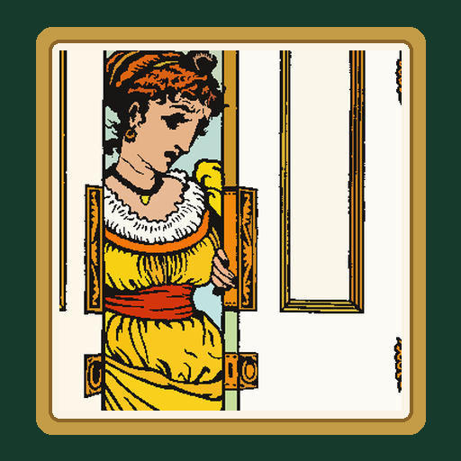

<- all projects

Color Storybook
PC
Volume
Live
Colour the faded tales back to life
It is midnight in the Lantern Library. Something called the Grey has drained the colour from eight old picture books, and their stories are fading off the page. You are Wren, the night librarian. Every page is a real illustration by Walter Crane, the picture-book artist of the 1870s. Choose a numbered colour, click its areas and watch a fairy tale return line by line, while a library mystery unfolds between the books. 49 pages from 8 classic tales, including The Three Bears, The Frog Prince and Beauty and the Beast, four moods for every page and a daily page.